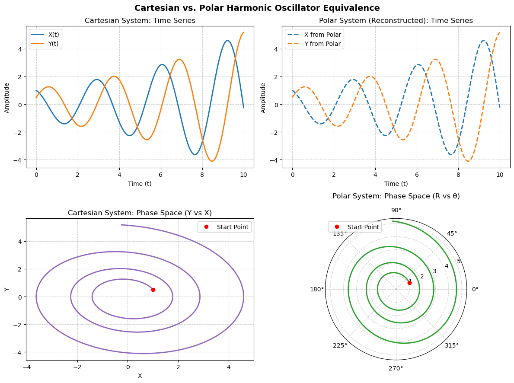

Code
import numpy as np
import matplotlib.pyplot as plt
from scipy.integrate import solve_ivp
# System parameters
omega = 2.0 # Frequency
a = 0.3 # Instability growth rate (a > 0)
# Initial conditions in Cartesian space
X0 = 1.0
Y0 = 0.5
# Convert initial conditions to Polar space
R0 = np.sqrt(X0**2 + Y0**2)
theta0 = np.arctan2(Y0, X0)
# Time span for simulation
t_span = (0, 10)
t_eval = np.linspace(t_span[0], t_span[1], 1000)
# --- 1. Define Systems ---
def cartesian_system(t, state, omega, a):
X, Y = state
dXdt = -omega * Y
dYdt = omega * X + a * Y
return [dXdt, dYdt]
def polar_system(t, state, omega, a):
R, theta = state
dRdt = a * R * (np.sin(theta)**2)
dthetadt = omega + (a / 2.0) * np.sin(2 * theta)
return [dRdt, dthetadt]
# --- 2. Solve ODEs ---
# Solve Cartesian
sol_cart = solve_ivp(
cartesian_system,
t_span,
[X0, Y0],
args=(omega, a),
t_eval=t_eval,
rtol=1e-8,
atol=1e-10
)
# Solve Polar
sol_polar = solve_ivp(
polar_system,
t_span,
[R0, theta0],
args=(omega, a),
t_eval=t_eval,
rtol=1e-8,
atol=1e-10
)
# Convert Polar solution back to Cartesian for direct comparison
R_sol = sol_polar.y[0]
theta_sol = sol_polar.y[1]
X_from_polar = R_sol * np.cos(theta_sol)
Y_from_polar = R_sol * np.sin(theta_sol)
# --- 3. Plot Results ---
fig, axes = plt.subplots(2, 2, figsize=(12, 9))
fig.suptitle("Cartesian vs. Polar Harmonic Oscillator Equivalence", fontsize=14, fontweight="bold")
# Plot 1: Cartesian Time Series (X(t), Y(t))
axes[0, 0].plot(sol_cart.t, sol_cart.y[0], label="X(t)", color="tab:blue", lw=2)
axes[0, 0].plot(sol_cart.t, sol_cart.y[1], label="Y(t)", color="tab:orange", lw=2)
axes[0, 0].set_title("Cartesian System: Time Series")
axes[0, 0].set_xlabel("Time (t)")
axes[0, 0].set_ylabel("Amplitude")
axes[0, 0].grid(True, linestyle="--", alpha=0.6)
axes[0, 0].legend()
# Plot 2: Polar System Converted to Cartesian Time Series
axes[0, 1].plot(sol_polar.t, X_from_polar, label="X from Polar", color="tab:blue", linestyle="--", lw=2)
axes[0, 1].plot(sol_polar.t, Y_from_polar, label="Y from Polar", color="tab:orange", linestyle="--", lw=2)
axes[0, 1].set_title("Polar System (Reconstructed): Time Series")
axes[0, 1].set_xlabel("Time (t)")
axes[0, 1].set_ylabel("Amplitude")
axes[0, 1].grid(True, linestyle="--", alpha=0.6)
axes[0, 1].legend()
# Plot 3: Cartesian Phase Space (Y vs X)
axes[1, 0].plot(sol_cart.y[0], sol_cart.y[1], color="tab:purple", lw=2)
axes[1, 0].plot(X0, Y0, "ro", label="Start Point")
axes[1, 0].set_title("Cartesian System: Phase Space (Y vs X)")
axes[1, 0].set_xlabel("X")
axes[1, 0].set_ylabel("Y")
axes[1, 0].grid(True, linestyle="--", alpha=0.6)
axes[1, 0].legend()
# Plot 4: Polar Phase Space (Polar Coordinates Plot)
ax_polar = fig.add_subplot(2, 2, 4, projection="polar")
axes[1, 1].remove() # Replace standard axis with polar axis
ax_polar.plot(theta_sol, R_sol, color="tab:green", lw=2)
ax_polar.plot(theta0, R0, "ro", label="Start Point")
ax_polar.set_title("Polar System: Phase Space (R vs θ)", pad=15)
ax_polar.grid(True, linestyle="--", alpha=0.6)
ax_polar.legend(loc="upper left")
plt.tight_layout()
plt.show()